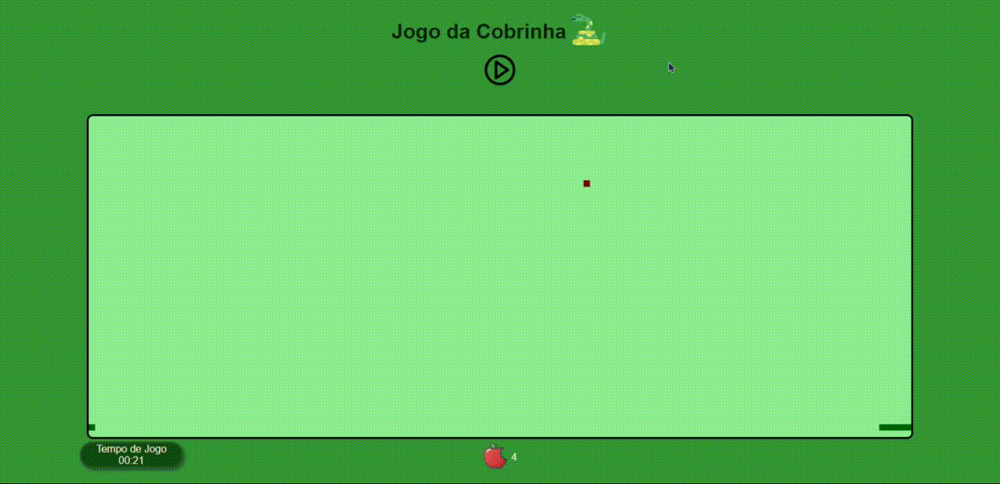
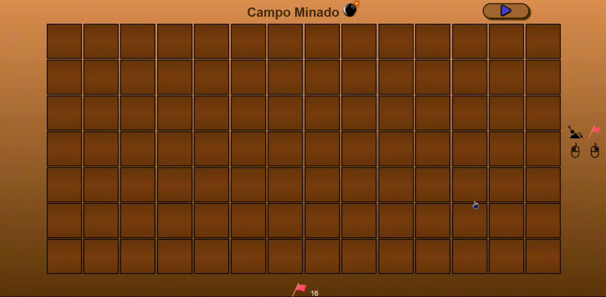
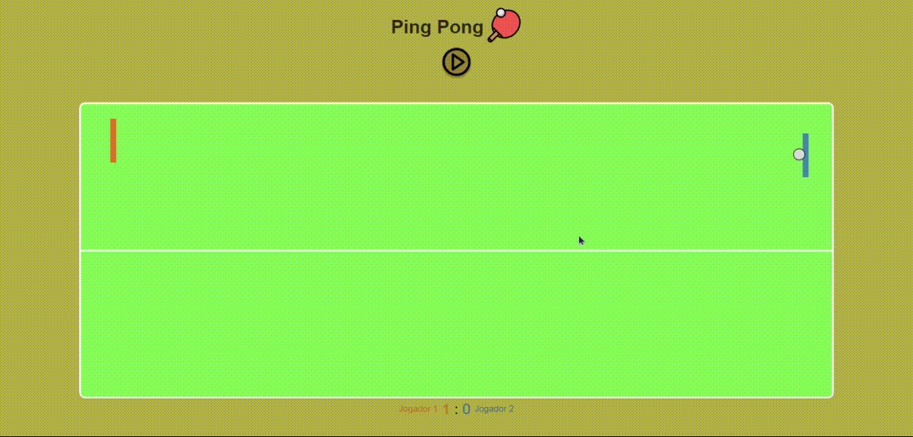
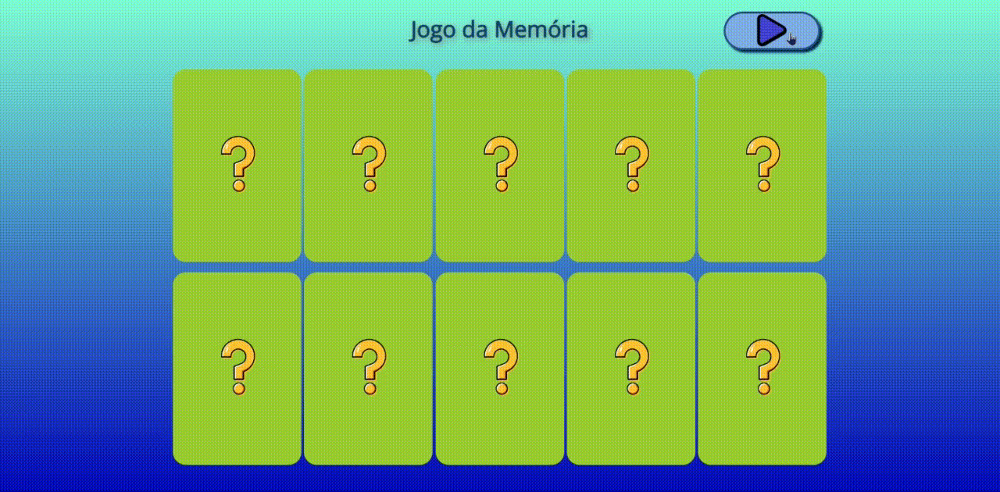
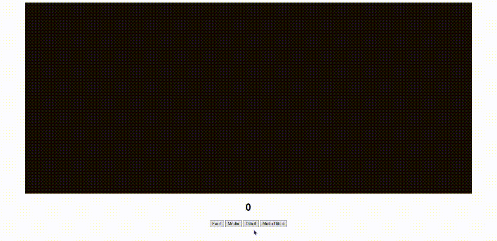
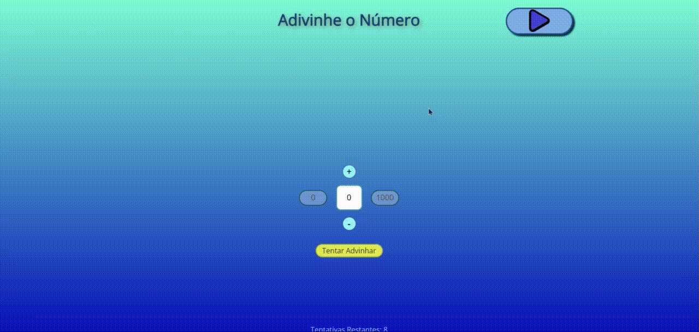

Plataforma de Projetos Pessoais 👾
Meus Projetos
-

Jogo da Cobrinha
Descrição do Projeto:
O clássico "Jogo da Cobrinha", onde o jogador deve coletar o máximo de maçãs que conseguir no menor tempo possível, evitando colidir no próprio corpo.
Tecnologias Utilizadas:


-

Campo Minado
Descrição do Projeto:
O mini-game clássico de Campo Minado. Seu objetivo é cavar todas as lacunas seguras sem cair em nenhuma bomba, caso contrário, ela ativará todas as demais e o jogo acaba.
Tecnologias Utilizadas:
-

Ping Pong
Descrição do Projeto:
O mini-game clássico "Pong" do Atari, um simulador eletrônico de Ping-Pong de Mesa.
Tecnologias Utilizadas:
-

Jogo da Memória
Descrição do Projeto:
O mini-game clássico de Jogo da Memória, onde diversas cartas dispostas em pares de figuras são embaralhadas e o jogador deve encontrar o máximo de pares que conseguir no menor número de tentativas.
Tecnologias Utilizadas:
-

Acerte o Alvo
Descrição do Projeto:
Um jogo para treinar sua precisão e coordenação motora com mouse em diversos níveis.
Tecnologias Utilizadas:
-

Adivinhe o Número
Descrição do Projeto:
Versão matemática da brincadeira infantil "Tá Quente, Tá Frio". O jogador deve adivinhar um número inteiro aleatório entre 0 e 1000 em um número limitado de tentativas. Após cada tentativa, serão informadas dicas para auxiliar o jogador a se aproximar do resultado correto.
Tecnologias Utilizadas:
Sobre Mim
- 🧑 Sandro Márcio Rosa de Souza Filho
- 🎂 01/03/2004
- 🎓 Técnico em Informática (IFF Campus Campos Centro)
- 👨💻 Desenvolvedor de Software Back-End
- 📚 Estudante da Alura Cursos Online
-
🖊️ Biografia:
Saudações, visitantes! 🖖
Me chamo Sandro Rosa de Souza, nasci em Itaperuna e, atualmente, moro em Campos dos Goytacazes.
Minha história na área de tecnologia foi construída majoritariamente por experiências que moldaram meus interesses. Entrei em contato com a Informática pela primeira vez em 2019, quando passei para o curso Técnico em Informática Integrado ao Ensino Médio do Instituto Federal Fluminense Campus Campos Centro. Ao longo da formação, me descobri na área de TI e desejei seguir carreira na área de Hardware, porém, após participar de uma bolsa de Iniciação Científica Junior, tomei gosto pela área de Desenvolvimento de Software.
Posteriormente, decidi seguir a stack de Back-End após um primeiro contato durante a produção do Projeto Final do meu curso técnico, o que me gerou enorme interesse pelas tecnologias Back-End e tudo o que compõe esta área.Atualmente, estou estudando programação pela plataforma Alura Cursos Online e pretendo posteriormente me graduar em Sistemas da Informação. Meu objetivo é um dia me tornar um Engenheiro de Software.
Consistência e dedicação são minhas maiores filosofias para tudo na vida. Estou sempre buscando me aprimorar ao máximo a cada dia, transformando os erros de ontem em ensinamentos para o hoje. Reconheço minhas limitações físicas e intelectuais e estou sempre desejando adquirir mais experiência e conhecimento com as pessoas ao meu redor, assim como estou disposto a auxiliar com o conhecimento que tenho, sempre quando possível.
❝Conhece-te a ti mesmo e conhecerás os deuses e o universo, porque se o que procuras não achares primeiro dentro de ti mesmo, não acharás em lugar algum❞ - Oráculo de Delphos